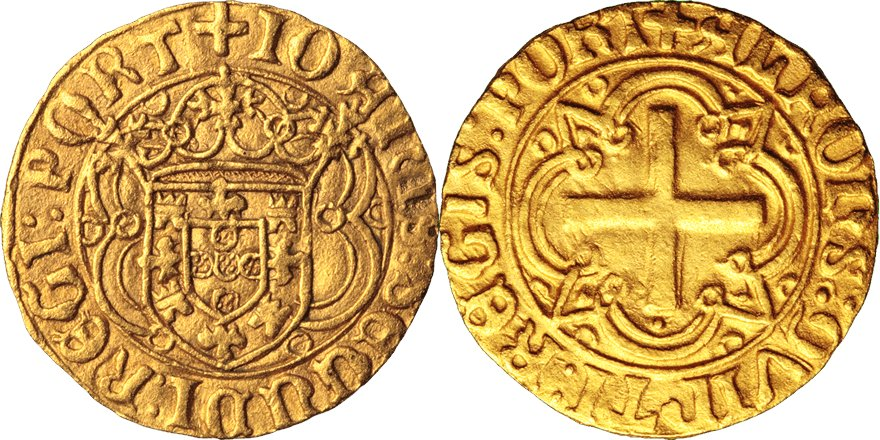
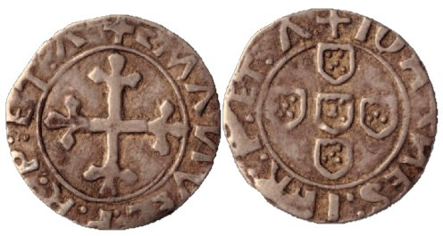

Para que fique claro:
1-O estudo do senhor professor Rui Centeno sobre os justos, para lá do que decalcou dos meus artigos e dos de Canto Garcia, é um emaranhado pedante de raciocínios completamente escusados e baseados em premissas falsas.
2-Se o senhor professor Rui Centeno quer saber quais foram as primeiras emissões de justos e quais foram as últimas, que olhe para as moedas híbridas João II/Afonso V e João II/Manuel e que memorize, anote ou publique conclusões.
3-O senhor professor Rui Centeno valida sistematicamente moedas restauradas e falsificadas nas permutas da SPN, oferecendo-as para venda a sócios incautos, que confiam no prestígio institucional da sua validação.
4-O senhor professor Rui Centeno não entende nada de restauros e arrisca-se a criar uma perigosa teoria que confunde restauros de cunhos com restauros de moedas, para validar os segundos à guiza dos primeiros.
5-O senhor professor Rui Centeno ignora por completo a reutilização de cunhos e sobretudo o motivo porque se começaram a bater justos e espadins. Se as emissões são para casos específicos, claro que sobram sempre cunhos com vida útil. E o que se fez a esses cunhos senhor professor?
Conclusão: qvinti -» secundo -» II.
(Até um aluno do décimo segundo ano acertava a resposta num teste psicotécnico.... Se não tem amostra, estude os espadins...)
Termino com algumas palavras do senhor professor:
"Em tais circunstâncias, aconselha a prudência que “sapiens nihil affirmat quod non probat” e, por isso, decisões com esta responsabilidade devem estar sempre respaldadas em estudos credíveis e dificilmente questionáveis, o que, pelo que acima ficou dito, não se verifica no que ao Justo do Porto diz respeito."
#oreivainu